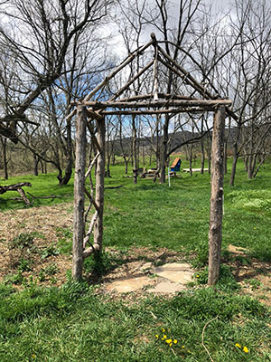
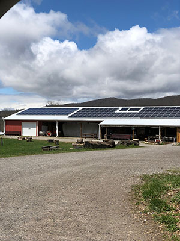
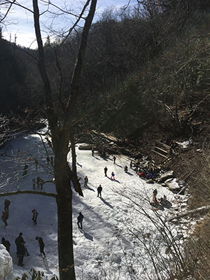
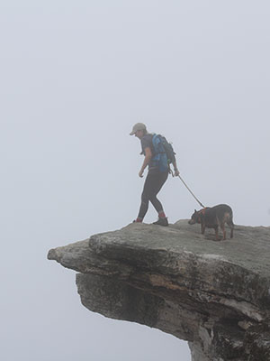
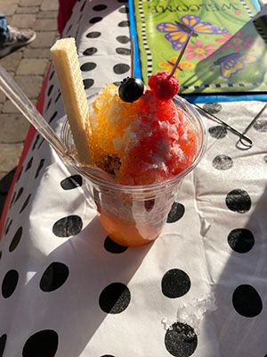
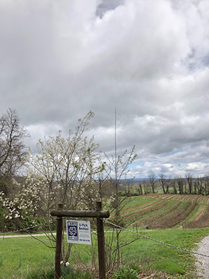
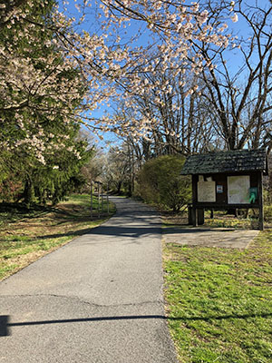
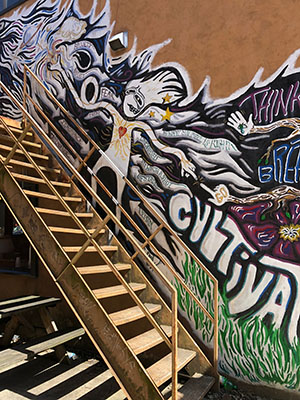

Tubing the New River
2591 Big Falls Rd, Blacksburg, VA 24060
In the summer, when Blacksburg is at its hottest, my favorite thing to do is go tubing on the New River. You can make a whole day of it, with snacks, music, and friends, just floating down the river! If you don't have any tubes and aren't sure how to get back after floating for miles, use the New River Junction. They have tubes for rent and a bus service to drop off and pick up those going down the river. The Junction is also a great place to just go swimming and hang out on the rocky outcrops along the river. During the summer the river gets a bit crowded, but it's a big river so that causes little disturbance. So grab your sunscreen, friends, and a radio for a relaxing and fun float down the river!
Trail Riding - Leah Clemens
Trail Rides at Winterfrost
100, High Meadows Pkwy, Radford, VA 24141
Even though it's a bit of a drive to Radford, this horse rescue farm is worth the trip! The farm offers many horse related activities for funding, one of which is their Ride-A-Rescue program. For $30/hr you can ride one of the rescue horses along a scenic guided trail ride. One of my favorite trails is the one that goes along the river. If it's a warm day you can even ride into the water a little bit and enjoy the splashing that will ensue. I highly recommend taking a ride at Winterfrost Farm, not only is it a great time, but the money also goes into caring for the horses.

Little play area - Leah Clemens
Heritage Park
2300 Glade Rd, Blacksburg, VA 24060
Feel like getting out, but not quite in the mood for a hike? Heritage Park is a personal favorite of mine. It is an old beef farm that the Town of Blacksburg bought, protecting all the animals and wildlife that made the woods, fields, and creeks their home. It's a great spot to go with pets and enjoy the open space away from cars and other town related hazards. Certain areas of the farm have been "remodeled" for children to enjoy the park a bit more. This is a very popular spot for VT's many wildlife students to come and observe the many creatures and insects inhabiting the area.

Rising Silo Brewery - Leah Clemens
Rising Silo
2351 Glade Rd, Blacksburg, VA 24060
Taproom Hours:
Thursdays 3-9
Fridays 3-9
Saturdays 12-9
Even though Rising Silo is more of a "place to eat", I believe it belongs on this page because of how diverse it is! Rising Silo is a brewery/restaurant on a farm right across the road from Heritage Park. They brew their own beer in house and the restaurant offers amazing farm-to-table tabula rasa food. It's a fantastic spot to go with friends or family, enjoy some beer and food while playing cornhole on the grassy lawn. For those not old enough to drink the beer, Rising Silo also has some to die for nitro coffee! As if it couldn't get any better, they're pet friendly! So go for a little outing at Heritage Park with your dog and friends, then cross the street for food and beer!

View from inside the frozen Cascades - Leah Clemens
Cascade Falls
2068 Cascade Dr, Pembroke, VA 24136
If you feel in the mood for some hiking, all of the great trails are found outside of Blacksburg. One of these trails is the easy paced and well known Cascades. The path follows a wooded Creek up the mountain leading up to the impressive 69ft Cascade Falls. It's a great hike for those who like to take it easy and enjoy walking. Most people like to swim in the falls basin during the summer, even though it's always freezing cold! So pack your swimsuit, some snacks, and shoes (you don't even need hiking boots) for a shaded hike through the woods and up the mountain.

Foggy day made it feel like we were hiking through the clouds - Leah Clemens
McAfee Knob
Catawba Valley Dr, Catawba, VA 24070
From Interstate 81, take Exit 141 to VA 419/311. Go north for approximately 1/4 mile and turn right on Route 311. Travel 5.5 miles north on Route 311 to the top of Catawba Mountain, where there's a gravel parking lot and the spot where the Appalachian Trail crosses the road. From the parking lot, walk back across Route 311 to begin the hike.
McAfee Knob is one of the most famous outlooks along the Appalachian Trail, offering a 270-degree view of the Roanoke Valley. Its signature ledge offers the greatest view and some amazing photo opportunities! There are two trails you can take to the top; the A.T. section, or the leisurely fire road. Weekends are when the hike becomes the most crowded, so try to go during the week or at less popular hours. I personally love sunrise hikes at McAfees. After hiking, you can go to Home Place for some great country cooking!

Snowcone with all real fruit from the Farmer's Market - Leah Clemens
Farmer's Market
100 Draper Rd NW, Blacksburg, VA 24060
Apr-Oct: Wed. 12-6pm Sat. 8am-2pm
Nov-Dec: Wed. 12-6pm Sat. 9am-2pm
Jan-Mar: Sat. 10am-2pm
I believe that no matter where you go, if there's a farmer's market you're sure to have a wonderful time! It's a great place to mingle with the locals, enjoy a fresh selections of produce, live music, and delicious snacks. Kids will run around with snow cones in hand, while parents will relax and talk with friends. Sometimes the market offers crepes and pancakes! It's great to get outside and browse the stalls full of delicous homemade food and other great crafts.

3 Birds Farm before picking season - Leah Clemens
3 Birds Berry Farm
1876 Brooksfield Rd, Blacksburg, VA 24060
This farm is the cornucopia of berry picking! With blueberries, blackberries, and raspberries at $3 a pint. 3 Birds is THE place to go in the summer. I really love going with friends and spending the day picking, eating, and sometimes throwing, the delicious berries. Summer is the time to be outside with friends. Add some yummy fruit into the mix and you've got a day well spent.

Trail entrance near the library - Leah Clemens
Huckleberry Trail
200 Miller St, Blacksburg, VA 24060
Trailhead is located near the library parking lot on Miller Street. Do not park in the library lot; towing may be enforced for trail users parked there. Spaces designated for the Huckleberry Trail are available in the municipal lot to the west of the library lot.
The Huckleberry is a 7.5 mile paved trail that stretches through Blacksburg and Christiansburg. It is the best choice for those who enjoy running, biking, or walking along a paved path. The surrounding area is almost always wooded and shady, although certain points do pass local cattle farms. I love the trail on days when I feel like having some time to myself and going for a walk. But that doesn't mean you have to hit the trail alone, families are often found biking or walking the trail during nice weather.

Pretty cool graffiti dude - Leah Clemens
Downtown Art Walls
Can be found all throughout Downtown. The most popular one is on the alley wall next to D.P. Dough.
While walking around and enjoying the sights of Downtown, be sure to check out the various mural walls! Store owners partnered with local artists to cover crass graffiti with creative murals. They're scattered all across town which makes finding them a bit of a treasure hunt. Locals and students often use these walls as a backdrop for their photography projects, or just a few cool selfies.